"Apa Itu Tujuan SDGs dan Manfaat SDGs Pendidikan Berqualitas?":
SDGs adalah serangkaian tujuan yang ditetapkan oleh Perserikatan Bangsa-Bangsa (PBB) untuk mencapai kehidupan yang lebih baik dan lebih berkelanjutan bagi semua orang di planet ini. Ada 17 tujuan SDGs yang saling terkait dan saling mendukung untuk mengatasi berbagai tantangan global yang kita hadapi. Dari 17 tujuan tersebut saya memilih tujuan pendidikan berqualitas sebagai tujuan utama yang akan saya bahas.
"Apa Itu Dampak SDGs Pendidikan Berqualitas Terhadap Masyarakat?":
Pendidikan berqualitas meningkatkan akses pendidikan yang inklusif dan setara, sehingga anak-anak dari berbagai latar belakang, termasuk kelompok rentan, dapat mengenyam pendidikan berkualitas. Dampaknya meliputi peningkatan kualitas hidup melalui keterampilan yang relevan untuk pekerjaan layak, penghapusan ketidaksetaraan sosial, dan pengurangan kesenjangan gender. Selain itu, pendidikan juga membangun masyarakat yang sadar akan pembangunan berkelanjutan, mempromosikan nilai-nilai perdamaian dan toleransi, serta menciptakan stabilitas sosial. Dengan adanya pengembangan keterampilan teknis dan kejuruan, masyarakat lebih siap menghadapi tantangan dunia kerja modern, yang berkontribusi pada pertumbuhan ekonomi. Di tingkat global, kolaborasi dalam pendidikan mempercepat transfer pengetahuan dan teknologi, menghasilkan inovasi yang berdampak luas. Secara keseluruhan, kerja sama ini menjadi fondasi bagi pembangunan manusia yang lebih baik, ekonomi yang berkelanjutan, dan dunia yang lebih damai serta inklusif.
"Nilai Pancasila yang Diterapkan pada SDGs Goal 4 Pendidikan Berqualitas?" :
Kerja sama global dalam mencapai Tujuan 4 SDGs: Pendidikan Berkualitas mencerminkan berbagai nilai Pancasila yang relevan. Nilai persatuan tercermin dalam upaya berbagai negara untuk bekerja sama demi memastikan pendidikan berkualitas yang merata bagi semua, tanpa memandang latar belakang, gender, atau kondisi sosial. Hal ini menunjukkan semangat persaudaraan dan solidaritas untuk menghadapi isu global bersama-sama. Selain itu, nilai gotong royong terlihat dalam inisiatif bersama seperti penyediaan beasiswa, pelatihan guru, dan pembangunan fasilitas pendidikan yang inklusif dan ramah untuk semua. Melalui kolaborasi ini, masyarakat dari berbagai lapisan saling membantu demi mencapai tujuan bersama, yakni pendidikan yang mendukung kesejahteraan dan keberlanjutan. Dengan menerapkan nilai-nilai Pancasila, kerja sama ini tidak hanya berdampak positif bagi masyarakat Indonesia, tetapi juga memperkuat kontribusi bangsa dalam menciptakan dunia yang lebih adil dan harmonis.
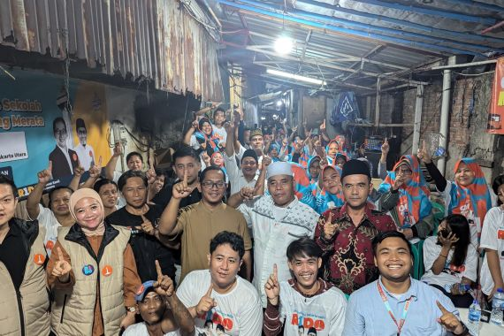"Tujuan Utama SDGs Pendidikan Berqualitas/Goal 4" :
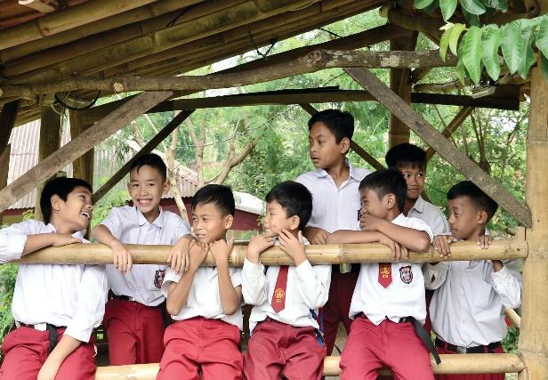Pendidikan dasar dan menengah gratis :
Pada tahun 2030, menjamin bahwa semua anak perempuan dan laki-laki menyelesaikan pendidikan dasar dan menengah tanpa dipungut biaya, setara, dan berkualitas, yang mengarah pada capaian pembelajaran yang relevan dan efektif
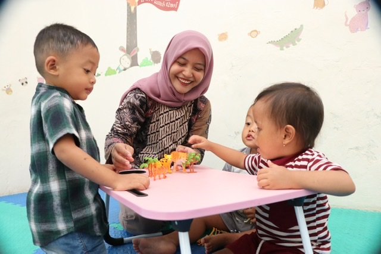1. Akses yang sama terhadap pendidikan anak usia dini yang berkualitas
Pada tahun 2030, menjamin bahwa semua anak perempuan dan laki-laki memiliki akses terhadap perkembangan dan pengasuhan anak usia dini, pengasuhan, pendidikan pra-sekolah dasar yang berkualitas, sehingga mereka siap untuk menempuh pendidikan dasar
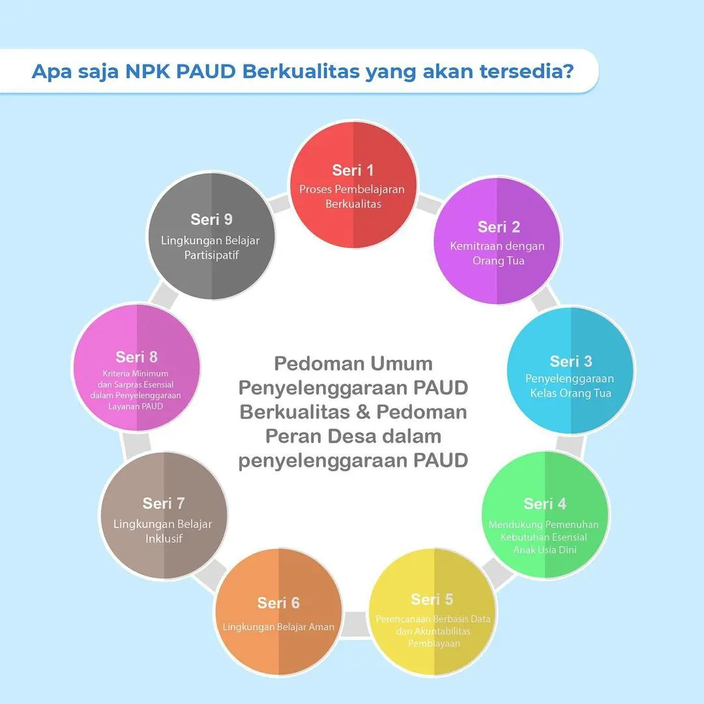2. Akses yang sama terhadap pendidikan anak usia dini yang berkualitas
Pada tahun 2030, menjamin bahwa semua anak perempuan dan laki-laki memiliki akses terhadap perkembangan dan pengasuhan anak usia dini, pengasuhan, pendidikan pra-sekolah dasar yang berkualitas, sehingga mereka siap untuk menempuh pendidikan dasar
3. Akses yang sama ke pendidikan teknis, kejuruan, dan pendidikan tinggi
Pada tahun 2030, menjamin akses yang sama bagi semua perempuan dan lakilaki, terhadap pendidikan teknik, kejuruan dan pendidikan tinggi, termasuk universitas, yang terjangkau dan berkualitas
4. Tingkatkan jumlah orang dengan keterampilan yang relevan untuk kesuksesan finansial
Pada tahun 2030, meningkatkan secara signifikan jumlah pemuda dan orang dewasa yang memiliki keterampilan yang relevan, termasuk keterampilan teknik dan kejuruan, untuk pekerjaan, pekerjaan yang layak dan kewirausahaan

5. Hilangkan semua diskriminasi dalam pendidikan
Pada tahun 2030, menghilangkan disparitas gender dalam pendidikan, dan menjamin akses yang sama untuk semua tingkat pendidikan dan pelatihan kejuruan, bagi masyarakat rentan termasuk penyandang cacat, masyarakat penduduk asli, dan anak-anak dalam kondisi rentan
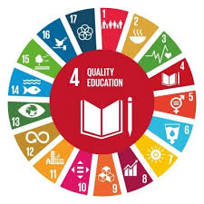6. Literasi dan numerasi universal
Pada tahun 2030, menjamin bahwa semua remaja dan proporsi kelompok dewasa tertentu, baik laki-laki maupun perempuan, memiliki kemampuan literasi dan numerasi
7. Pendidikan untuk pembangunan berkelanjutan dan kewarganegaraan global
Pada tahun 2030, menjamin semua peserta didik memperoleh pengetahuan dan keterampilan yang diperlukan untuk meningkatkan pembangunan berkelanjutan, termasuk antara lain, melalui pendidikan untuk pembangunan berkelanjutan dan gaya hidup yang berkelanjutan, hak asasi manusia, kesetaraan gender, promosi budaya damai dan non kekerasan, kewarganegaraan global dan penghargaan terhadap keanekaragaman budaya dan kontribusi budaya terhadap pembangunan berkelanjuta
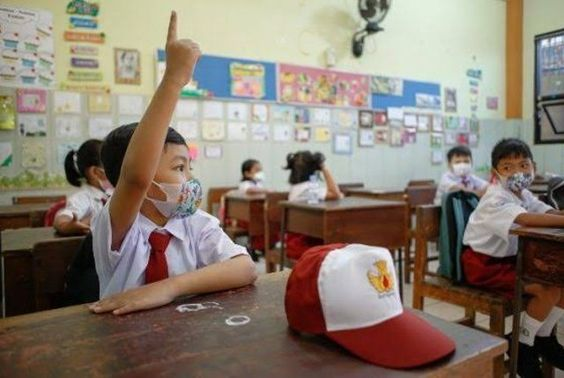A. Membangun dan meningkatkan sekolah inklusif dan aman
Membangun dan meningkatkan fasilitas pendidikan yang ramah anak, ramah penyandan cacat dan gender, serta menyediakan lingkungan belajar yang aman, anti kekerasan, inklusif dan efektif bagi semua.
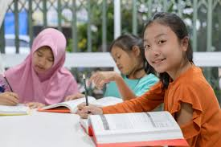B. Memperluas beasiswa pendidikan tinggi untuk negara-negara berkembang
Pada tahun 2020, secara signifikan memperluas secara global, jumlah beasiswa bagi negara berkembang, khususnya negara kurang berkembang, negara berkembang pulau kecil, dan negara-negara Afrika, untuk mendaftar di pendidikan tinggi, termasuk pelatihan kejuruan, teknologi informasi dan komunikasi, program teknik, program rekayasa dan ilmiah, di negara maju dan negara berkembang lainnya.
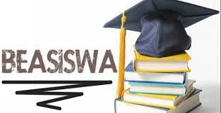C. Meningkatkan pasokan guru yang berkualitas di negara-negara berkembang
Pada tahun 2030, secara signifikan meningkatkan pasokan guru yang berkualitas, termasuk melalui kerjasama internasional dalam pelatihan guru di negara berkembang, terutama negara kurang berkembang, dan negara berkembang kepulauan kecil.
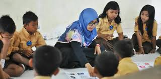Hubungan Bilateral Filipina dengan indonesia :
1.Sejarah Pahlawan Nasional :
Hubungan diplomatik resmi antara Indonesia dan Filipina dimulai pada November 1948. Sejak itu, kedua negara telah menjalin hubungan bilateral yang erat, berbagi banyak kesamaan budaya dan nilai-nilai dalam kerjasama kawasan.
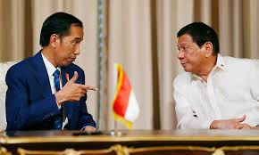2. Kerja Sama dalam Organisasi Regional dan Internasional :
Indonesia dan Filipina bekerja sama dalam berbagai organisasi, termasuk ASEAN, Gerakan Non-Blok, dan APEC. Kerjasama ini bertujuan untuk memperkuat posisi kedua negara di kancah internasional, serta menjaga stabilitas dan perdamaian di kawasan Asia Tenggara.
.png)
3. Bidang Ekonomi dan Perdagangan :
Filipina dan Indonesia memiliki hubungan ekonomi yang baik, terutama dalam sektor minyak kelapa sawit, produk pertanian, dan perikanan. Kedua negara terus bekerja sama untuk menciptakan perubahan positif dalam perdagangan dan investasi.
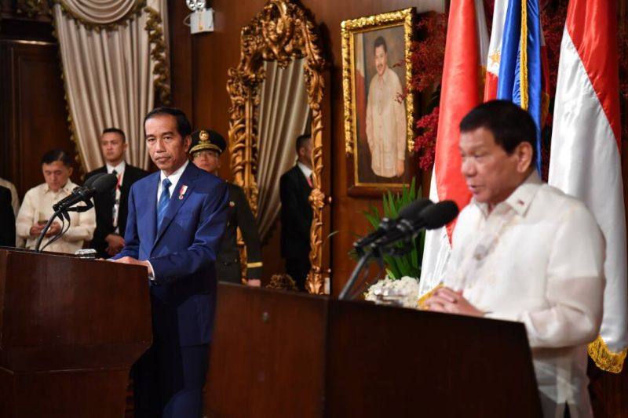4. Keamanan dan Pertahanan :
Sebagai negara yang berbatasan langsung di Laut Sulawesi dan Laut Sulu, Indonesia dan Filipina bekerja sama untuk menjaga keamanan maritim, melindungi wilayah perairan dari ancaman ilegal, serta mengatasi permasalahan lintas batas.
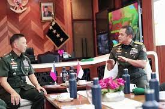5. Terorisme Lintas Batas dan Separatisme
Indonesia dan Filipina bekerja sama untuk mengeksplorasi berbagai cara dalam memerangi terorisme dan kejahatan transnasional lainnya yang mengancam perbatasan mereka dan Asia Tenggara secara lebih luas.
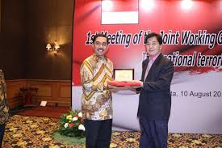6. Dukungan untuk Perdamaian dan Stabilitas :
Presiden Indonesia telah menyatakan kesiapan negaranya untuk membantu pemerintah Filipina dalam pembicaraan damai dengan kelompok separatis Islam yang aktif di perbatasan. Sebagai balasan, Filipina juga telah membantu Indonesia dalam negosiasi dengan pemberontak dan berperan sebagai pemantau selama proses perdamaian di Aceh pada tahun 2005, membantu memastikan stabilitas dan perdamaian yang berkelanjutan di wilayah tersebut.
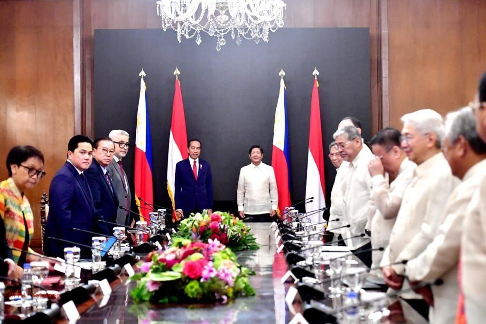Makalah IPS Pengaruh SDGs Terhadap Kerjasama International di Indonesia : NAYA 91/20
REFLEKSI PPKN : Apa yang saya Pelajaran dari Tugas ini? :
Dalam tugas ini, saya belajar bahwa peran Indonesia di kancah internasional sangat penting dalam mendukung pencapaian SDGs, khususnya pendidikan berkualitas. Indonesia tidak hanya menjadi penerima manfaat kerja sama global, tetapi juga berkontribusi aktif, misalnya melalui program beasiswa, pelatihan guru, dan kerja sama pendidikan dengan negara lain. Hal ini menunjukkan bahwa Indonesia memahami pentingnya solidaritas global untuk menciptakan masa depan yang lebih baik bagi semua. Menurut saya, kerja sama internasional ini adalah bentuk nyata dari implementasi nilai-nilai Pancasila. Persatuan tercermin dalam upaya bersama untuk mengatasi tantangan global, sementara gotong royong terlihat dalam kontribusi Indonesia untuk mendukung pendidikan dan pemberdayaan masyarakat, baik di dalam negeri maupun di tingkat global. Saya juga menyadari bahwa kontribusi Indonesia di bidang ini memperkuat posisi negara sebagai bagian penting dari komunitas dunia yang peduli terhadap pembangunan berkelanjutan. Melalui refleksi ini, saya merasa bahwa Indonesia harus terus memperkuat perannya dalam mencapai SDGs. Dengan berkolaborasi, kita tidak hanya membantu dunia, tetapi juga memperkuat komitmen nasional untuk menciptakan masyarakat yang adil, makmur, dan berdaya saing di tengah tantangan global. Ini adalah langkah penting dalam menunjukkan bahwa kita, sebagai bangsa, berperan aktif dalam membangun masa depan dunia yang lebih baik. Selain mengerti apa dampak dari kerjasama SDGs, saya juga lebih memahami terhadap dampak kerjasama bilateral dengan negara lain, didalam tugas ini saya jadi lebih menguasai kerjasama-kerjasama yang Indonesi memiliki dengan negara Filipina. Seperti hal-hal positive dan dampak-dampak positive yang dibawa oleh kerjasama kedua negara. Contohnya kerjasama yang memeberikan keuntungan ekonomi, keamanan, yang mengentikan terorisme, dan lain sebagainya. Dengan itu saya mempelajaran banyak sekali hal-hal yang tentang kerjasama yang melibatkan negara-negara lain.